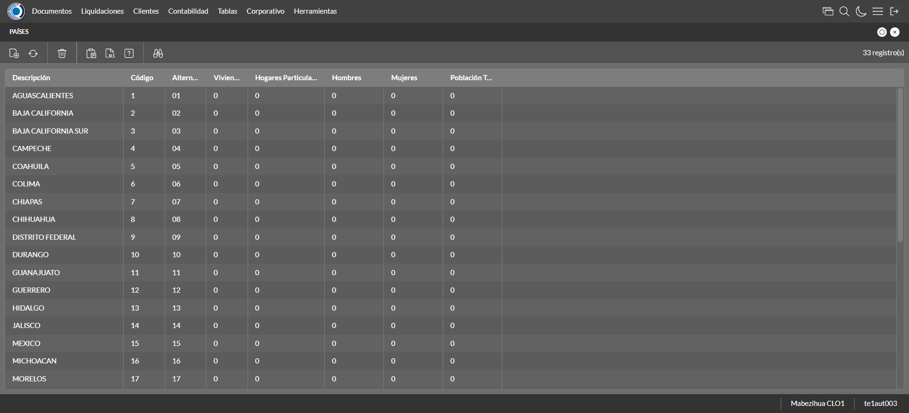
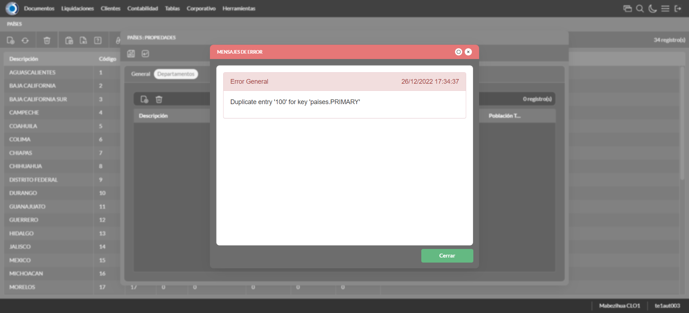
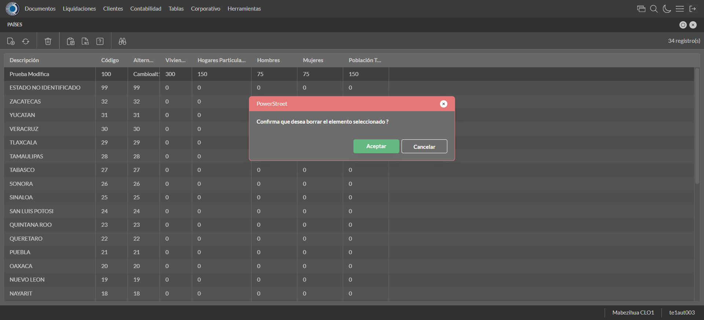

Desarrollado por : Area de Testing PWST
Fecha y hora de inicio : 2022-12-26 11:33:42
Duracion : 0:01:52.155477
Resultado : Total 8，Correctos 7 ，Errores 1 ，Taza de resultado 87.50%
Resumen 87.50% Errores 1 Fallidos 0 Correctos 7 Test realizados 8
| Caso de Prueba | Total | Correctos | Fallido | Error | Detalles | Captura del error |
| UbicacionesGeograficas.Test: Escenario 1 de Ubicaciones Geograficas | 8 | 7 | 0 | 1 | Detalles | |
test |
ft1_1: 2022-12-26 11:33:43,884 - root - INFO - Se abre el chrome
2022-12-26 11:33:45,958 - root - INFO - Entra a la URL
2022-12-26 11:33:46,073 - root - INFO - Maximiza la pantalla
Traceback (most recent call last):
File "C:\Users\jsand\AppData\Local\Programs\Python\Python310\lib\site-packages\selenium-4.4.0-py3.10.egg\selenium\webdriver\remote\switch_to.py", line 87, in frame
frame_reference = self._driver.find_element(By.ID, frame_reference)
File "C:\Users\jsand\AppData\Local\Programs\Python\Python310\lib\site-packages\selenium-4.4.0-py3.10.egg\selenium\webdriver\remote\webdriver.py", line 856, in find_element
return self.execute(Command.FIND_ELEMENT, {
File "C:\Users\jsand\AppData\Local\Programs\Python\Python310\lib\site-packages\selenium-4.4.0-py3.10.egg\selenium\webdriver\remote\webdriver.py", line 434, in execute
self.error_handler.check_response(response)
File "C:\Users\jsand\AppData\Local\Programs\Python\Python310\lib\site-packages\selenium-4.4.0-py3.10.egg\selenium\webdriver\remote\errorhandler.py", line 243, in check_response
raise exception_class(message, screen, stacktrace)
selenium.common.exceptions.NoSuchElementException: Message: no such element: Unable to locate element: {"method":"css selector","selector":"[id="mainFrame"]"}
(Session info: chrome=108.0.5359.125)
Stacktrace:
Backtrace:
(No symbol) [0x0034F243]
(No symbol) [0x002D7FD1]
(No symbol) [0x001CD04D]
(No symbol) [0x001FC0B0]
(No symbol) [0x001FC22B]
(No symbol) [0x0022E612]
(No symbol) [0x002185D4]
(No symbol) [0x0022C9EB]
(No symbol) [0x00218386]
(No symbol) [0x001F163C]
(No symbol) [0x001F269D]
GetHandleVerifier [0x005E9A22+2655074]
GetHandleVerifier [0x005DCA24+2601828]
GetHandleVerifier [0x003F8C0A+619850]
GetHandleVerifier [0x003F7830+614768]
(No symbol) [0x002E05FC]
(No symbol) [0x002E5968]
(No symbol) [0x002E5A55]
(No symbol) [0x002F051B]
BaseThreadInitThunk [0x76796BD9+25]
RtlGetFullPathName_UEx [0x77B58FD2+1218]
RtlGetFullPathName_UEx [0x77B58F9D+1165]
During handling of the above exception, another exception occurred:
Traceback (most recent call last):
File "C:\Users\jsand\AppData\Local\Programs\Python\Python310\lib\site-packages\selenium-4.4.0-py3.10.egg\selenium\webdriver\remote\switch_to.py", line 90, in frame
frame_reference = self._driver.find_element(By.NAME, frame_reference)
File "C:\Users\jsand\AppData\Local\Programs\Python\Python310\lib\site-packages\selenium-4.4.0-py3.10.egg\selenium\webdriver\remote\webdriver.py", line 856, in find_element
return self.execute(Command.FIND_ELEMENT, {
File "C:\Users\jsand\AppData\Local\Programs\Python\Python310\lib\site-packages\selenium-4.4.0-py3.10.egg\selenium\webdriver\remote\webdriver.py", line 434, in execute
self.error_handler.check_response(response)
File "C:\Users\jsand\AppData\Local\Programs\Python\Python310\lib\site-packages\selenium-4.4.0-py3.10.egg\selenium\webdriver\remote\errorhandler.py", line 243, in check_response
raise exception_class(message, screen, stacktrace)
selenium.common.exceptions.NoSuchElementException: Message: no such element: Unable to locate element: {"method":"css selector","selector":"[name="mainFrame"]"}
(Session info: chrome=108.0.5359.125)
Stacktrace:
Backtrace:
(No symbol) [0x0034F243]
(No symbol) [0x002D7FD1]
(No symbol) [0x001CD04D]
(No symbol) [0x001FC0B0]
(No symbol) [0x001FC22B]
(No symbol) [0x0022E612]
(No symbol) [0x002185D4]
(No symbol) [0x0022C9EB]
(No symbol) [0x00218386]
(No symbol) [0x001F163C]
(No symbol) [0x001F269D]
GetHandleVerifier [0x005E9A22+2655074]
GetHandleVerifier [0x005DCA24+2601828]
GetHandleVerifier [0x003F8C0A+619850]
GetHandleVerifier [0x003F7830+614768]
(No symbol) [0x002E05FC]
(No symbol) [0x002E5968]
(No symbol) [0x002E5A55]
(No symbol) [0x002F051B]
BaseThreadInitThunk [0x76796BD9+25]
RtlGetFullPathName_UEx [0x77B58FD2+1218]
RtlGetFullPathName_UEx [0x77B58F9D+1165]
During handling of the above exception, another exception occurred:
Traceback (most recent call last):
File "C:\xampp\htdocs\versiones\automatizaciones\AutoPWST\01UG\testCase\UbicacionesGeograficas.py", line 36, in test
self.driver.switch_to.frame("mainFrame")
File "C:\Users\jsand\AppData\Local\Programs\Python\Python310\lib\site-packages\selenium-4.4.0-py3.10.egg\selenium\webdriver\remote\switch_to.py", line 92, in frame
raise NoSuchFrameException(frame_reference)
selenium.common.exceptions.NoSuchFrameException: Message: mainFrame
|
|
||||
test_000: Ingresa a la base de datos |
pt1_2: 2022-12-26 11:33:49,243 - root - INFO - Escribe el usuario
2022-12-26 11:33:49,396 - root - INFO - Escribe la contraseña
2022-12-26 11:33:49,546 - root - INFO - Se dio clic en el boton ingresar
2022-12-26 11:33:50,293 - root - INFO - Ejecutar Enterprise
2022-12-26 11:33:54,367 - root - INFO - Cambia entre pestañas
|
|
||||
test_001: Abre menu y ejecuta pantalla |
pt1_3: 2022-12-26 11:34:05,790 - root - INFO - Abre la pantalla de Paises
2022-12-26 11:34:06,343 - root - INFO - La pantalla ejecutada es Paises.
2022-12-26 11:34:06,344 - root - INFO - Captura: C:\xampp\htdocs\versiones\automatizaciones\AutoPWST\01UG\report\img screen：20221226_11_34_06.png
2022-12-26 11:34:17,024 - root - INFO - Se presiona el boton 'Nuevo', para crear un nuevo registro.
|
 | ||||
test_002: Abre la ventana de nuevo y crear un registro |
pt1_4: 2022-12-26 11:34:17,592 - root - INFO - Se abrio la pantalla para el ingreso de un registro nuevo.
2022-12-26 11:34:17,624 - root - INFO - El campo 'Codigo' si se encuentra visible.
2022-12-26 11:34:17,653 - root - INFO - El campo 'Alternativo' si se encuentra visible.
2022-12-26 11:34:17,682 - root - INFO - El campo 'Descrición' si se encuentra visible.
2022-12-26 11:34:17,712 - root - INFO - El campo 'Viviendas' si se encuentra visible.
2022-12-26 11:34:17,769 - root - INFO - El campo 'Hogares Particulares' si se encuentra visible.
2022-12-26 11:34:17,799 - root - INFO - El campo 'Población Hombres' si se encuentra visible.
2022-12-26 11:34:17,827 - root - INFO - El campo 'Población Mujeres' si se encuentra visible.
2022-12-26 11:34:17,855 - root - INFO - El campo 'Población Total' si se encuentra visible.
2022-12-26 11:34:17,883 - root - INFO - El campo 'Código ISO 3166' si se encuentra visible.
2022-12-26 11:34:17,928 - root - INFO - Ingresa el codigo del nuevo registro
2022-12-26 11:34:18,001 - root - INFO - Ingresa el codigo alternativo del nuevo registro
2022-12-26 11:34:18,097 - root - INFO - Ingresa la descripción del nuevo registro
2022-12-26 11:34:18,166 - root - INFO - Ingresa el número de viviendas del nuevo registro
2022-12-26 11:34:18,230 - root - INFO - Ingresa el número de hogares particulares del nuevo registro
2022-12-26 11:34:18,293 - root - INFO - Ingresa el número de Población de hombres del nuevo registro
2022-12-26 11:34:18,354 - root - INFO - Ingresa el número de Población de mujeres del nuevo registro
2022-12-26 11:34:18,420 - root - INFO - Ingresa el número de Población Total del nuevo registro
2022-12-26 11:34:18,483 - root - INFO - Ingresa el Codigo ISO del nuevo registro
2022-12-26 11:34:19,497 - root - INFO - Captura: C:\xampp\htdocs\versiones\automatizaciones\AutoPWST\01UG\report\img screen：20221226_11_34_19.png
2022-12-26 11:34:20,769 - root - INFO - Se hace el cambio de pestaña para continuar con el registro nuevo
2022-12-26 11:34:21,383 - root - INFO - Se presiona el boton 'Nuevo', para crear un nuevo registro.
2022-12-26 11:34:21,926 - root - INFO - El campo 'Codigo' si se encuentra visible.
2022-12-26 11:34:21,958 - root - INFO - El campo 'Alternativo' si se encuentra visible.
2022-12-26 11:34:21,985 - root - INFO - El campo 'Descrición' si se encuentra visible.
2022-12-26 11:34:22,016 - root - INFO - El campo 'Impuesto' si se encuentra visible.
2022-12-26 11:34:22,045 - root - INFO - El campo 'Viviendas' si se encuentra visible.
2022-12-26 11:34:22,078 - root - INFO - El campo 'Hogares Particulares' si se encuentra visible.
2022-12-26 11:34:22,107 - root - INFO - El campo 'Población Hombres' si se encuentra visible.
2022-12-26 11:34:22,162 - root - INFO - El campo 'Población Mujeres' si se encuentra visible.
2022-12-26 11:34:22,191 - root - INFO - El campo 'Población Total' si se encuentra visible.
2022-12-26 11:34:22,251 - root - INFO - Ingresa el codigo del nuevo registro
2022-12-26 11:34:22,338 - root - INFO - Ingresa el codigo alternativo del nuevo registro
2022-12-26 11:34:22,420 - root - INFO - Ingresa la descripción del nuevo registro
2022-12-26 11:34:23,476 - root - INFO - Ingresa el número de viviendas del nuevo registro
2022-12-26 11:34:23,589 - root - INFO - Ingresa el número de hogares particulares del nuevo registro
2022-12-26 11:34:23,665 - root - INFO - Ingresa el número de Población de hombres del nuevo registro
2022-12-26 11:34:23,736 - root - INFO - Ingresa el número de Población de mujeres del nuevo registro
2022-12-26 11:34:23,809 - root - INFO - Ingresa el número de Población Total del nuevo registro
2022-12-26 11:34:23,907 - root - INFO - Se hace el cambio de pestaña para continuar con el registro nuevo
2022-12-26 11:34:24,498 - root - INFO - Se presiona el boton 'Nuevo', para crear un nuevo registro.
2022-12-26 11:34:25,060 - root - INFO - El campo 'Localidad' si se encuentra visible.
2022-12-26 11:34:25,090 - root - INFO - El campo 'Alternativo' si se encuentra visible.
2022-12-26 11:34:25,120 - root - INFO - El campo 'Descrición' si se encuentra visible.
2022-12-26 11:34:25,147 - root - INFO - El campo 'Viviendas' si se encuentra visible.
2022-12-26 11:34:25,182 - root - INFO - El campo 'Hogares Particulares' si se encuentra visible.
2022-12-26 11:34:25,212 - root - INFO - El campo 'Población Hombres' si se encuentra visible.
2022-12-26 11:34:25,239 - root - INFO - El campo 'Población Mujeres' si se encuentra visible.
2022-12-26 11:34:25,266 - root - INFO - El campo 'Población Total' si se encuentra visible.
2022-12-26 11:34:25,313 - root - INFO - Ingresa el codigo del nuevo registro
2022-12-26 11:34:25,391 - root - INFO - Ingresa el codigo alternativo del nuevo registro
2022-12-26 11:34:25,481 - root - INFO - Ingresa la descripción del nuevo registro
2022-12-26 11:34:25,555 - root - INFO - Ingresa el número de viviendas del nuevo registro
2022-12-26 11:34:25,633 - root - INFO - Ingresa el número de hogares particulares del nuevo registro
2022-12-26 11:34:25,704 - root - INFO - Ingresa el número de Población de hombres del nuevo registro
2022-12-26 11:34:25,774 - root - INFO - Ingresa el número de Población de mujeres del nuevo registro
2022-12-26 11:34:25,845 - root - INFO - Ingresa el número de Población Total del nuevo registro
2022-12-26 11:34:25,901 - root - INFO - Se hace el cambio de pestaña para continuar con el registro nuevo
2022-12-26 11:34:26,536 - root - INFO - Se presiona el boton 'Nuevo', para crear un nuevo registro.
2022-12-26 11:34:27,084 - root - INFO - El campo 'Código' si se encuentra visible.
2022-12-26 11:34:27,114 - root - INFO - El campo 'Alternativo' si se encuentra visible.
2022-12-26 11:34:27,143 - root - INFO - El campo 'Descrición' si se encuentra visible.
2022-12-26 11:34:27,172 - root - INFO - El campo 'Viviendas' si se encuentra visible.
2022-12-26 11:34:27,201 - root - INFO - El campo 'Hogares Particulares' si se encuentra visible.
2022-12-26 11:34:27,238 - root - INFO - El campo 'Población Hombres' si se encuentra visible.
2022-12-26 11:34:27,270 - root - INFO - El campo 'Población Mujeres' si se encuentra visible.
2022-12-26 11:34:27,299 - root - INFO - El campo 'Población Total' si se encuentra visible.
2022-12-26 11:34:27,351 - root - INFO - Ingresa el codigo del nuevo registro
2022-12-26 11:34:27,452 - root - INFO - Ingresa el codigo alternativo del nuevo registro
2022-12-26 11:34:27,552 - root - INFO - Ingresa la descripción del nuevo registro
2022-12-26 11:34:27,638 - root - INFO - Ingresa el número de viviendas del nuevo registro
2022-12-26 11:34:27,724 - root - INFO - Ingresa el número de hogares particulares del nuevo registro
2022-12-26 11:34:27,819 - root - INFO - Ingresa el número de Población de hombres del nuevo registro
2022-12-26 11:34:27,912 - root - INFO - Ingresa el número de Población de mujeres del nuevo registro
2022-12-26 11:34:28,002 - root - INFO - Ingresa el número de Población Total del nuevo registro
2022-12-26 11:34:28,092 - root - INFO - Se da clic en el boton Guardar; se debe crear un nuevo registro.
2022-12-26 11:34:28,292 - root - INFO - Se da clic en el boton Guardar; se debe crear un nuevo registro.
2022-12-26 11:34:28,557 - root - INFO - Se hace el cambio de pestaña para continuar con el registro nuevo
2022-12-26 11:34:29,157 - root - INFO - Se presiona el boton 'Nuevo', para crear un nuevo registro.
2022-12-26 11:34:29,726 - root - INFO - El campo 'Artículo' si se encuentra visible.
2022-12-26 11:34:29,755 - root - INFO - El campo 'Impuesto' si se encuentra visible.
2022-12-26 11:34:32,302 - root - INFO - Se da clic en el boton Guardar; se debe crear un nuevo registro.
2022-12-26 11:34:32,498 - root - INFO - Se da clic en el boton Guardar; se debe crear un nuevo registro.
2022-12-26 11:34:32,688 - root - INFO - Se da clic en el boton Guardar; se debe crear un nuevo registro.
|

|
||||
test_003: Repetir el registro creado anteriormente |
pt1_5: 2022-12-26 11:34:32,974 - root - INFO - Se presiona el boton 'Refrescar', para crear un nuevo registro igual al anterior.
2022-12-26 11:34:33,212 - root - INFO - Se presiona el boton 'Nuevo', para crear un nuevo registro igual al anterior.
2022-12-26 11:34:33,836 - root - INFO - Ingresa el codigo del nuevo registro
2022-12-26 11:34:33,912 - root - INFO - Ingresa el codigo alternativo del nuevo registro
2022-12-26 11:34:33,997 - root - INFO - Ingresa la descripción del nuevo registro
2022-12-26 11:34:34,063 - root - INFO - Ingresa el número de viviendas del nuevo registro
2022-12-26 11:34:34,132 - root - INFO - Ingresa el número de hogares particulares del nuevo registro
2022-12-26 11:34:34,200 - root - INFO - Ingresa el número de Población de hombres del nuevo registro
2022-12-26 11:34:34,271 - root - INFO - Ingresa el número de Población de mujeres del nuevo registro
2022-12-26 11:34:34,346 - root - INFO - Ingresa el número de Población Total del nuevo registro
2022-12-26 11:34:34,418 - root - INFO - Ingresa el Codigo ISO del nuevo registro
2022-12-26 11:34:35,428 - root - INFO - Captura: C:\xampp\htdocs\versiones\automatizaciones\AutoPWST\01UG\report\img screen：20221226_11_34_35.png
2022-12-26 11:34:36,709 - root - INFO - Se hace el cambio de pestaña para continuar con el registro nuevo
2022-12-26 11:34:36,831 - root - INFO - Se da clic en el boton Guardar; se debe crear un nuevo registro.
2022-12-26 11:34:37,842 - root - INFO - Captura: C:\xampp\htdocs\versiones\automatizaciones\AutoPWST\01UG\report\img screen：20221226_11_34_37.png
2022-12-26 11:34:38,065 - root - INFO - Se presiona el boton 'Cerrar', para cerrar el mensaje de duplicidad de llave primaria
2022-12-26 11:34:38,193 - root - INFO - Se presiona el boton 'Cerrar', para cerrar la ventana
|
 | ||||
test_004: Modificar el registro |
pt1_6: 2022-12-26 11:34:38,318 - root - INFO - Se presiona el boton 'Refrescar', para crear un nuevo registro igual al anterior.
2022-12-26 11:34:39,737 - root - INFO - Se presiona el boton 'Codigo', para buscar un nuevo registro y poder modificarlo.
2022-12-26 11:34:41,392 - root - INFO - Se da clic en el registro creado, para proceder a modificarlo.
2022-12-26 11:34:42,030 - root - INFO - Ingresa el codigo alternativo del nuevo registro
2022-12-26 11:34:42,143 - root - INFO - Ingresa la descripción del nuevo registro
2022-12-26 11:34:42,254 - root - INFO - Ingresa el número de viviendas del nuevo registro
2022-12-26 11:34:42,338 - root - INFO - Ingresa el número de hogares particulares del nuevo registro
2022-12-26 11:34:42,443 - root - INFO - Ingresa el número de Población de hombres del nuevo registro
2022-12-26 11:34:42,527 - root - INFO - Ingresa el número de Población de mujeres del nuevo registro
2022-12-26 11:34:42,616 - root - INFO - Ingresa el número de Población Total del nuevo registro
2022-12-26 11:34:42,731 - root - INFO - Ingresa el Codigo ISO del nuevo registro
2022-12-26 11:34:43,740 - root - INFO - Captura: C:\xampp\htdocs\versiones\automatizaciones\AutoPWST\01UG\report\img screen：20221226_11_34_43.png
2022-12-26 11:34:44,993 - root - INFO - Se hace el cambio de pestaña para continuar con el registro nuevo
2022-12-26 11:34:46,132 - root - INFO - Se da clic en el registro creado, para proceder a modificarlo.
2022-12-26 11:34:46,759 - root - INFO - Ingresa el codigo alternativo del nuevo registro
2022-12-26 11:34:46,876 - root - INFO - Ingresa la descripción del nuevo registro
2022-12-26 11:34:48,006 - root - INFO - Ingresa el número de viviendas del nuevo registro
2022-12-26 11:34:48,110 - root - INFO - Ingresa el número de hogares particulares del nuevo registro
2022-12-26 11:34:48,206 - root - INFO - Ingresa el número de Población de hombres del nuevo registro
2022-12-26 11:34:48,324 - root - INFO - Ingresa el número de Población de mujeres del nuevo registro
2022-12-26 11:34:48,425 - root - INFO - Ingresa el número de Población Total del nuevo registro
2022-12-26 11:34:48,493 - root - INFO - Se hace el cambio de pestaña para continuar con el registro nuevo
2022-12-26 11:34:49,618 - root - INFO - Se da clic en el registro creado, para proceder a modificarlo.
2022-12-26 11:34:50,260 - root - INFO - Ingresa el codigo alternativo del nuevo registro
2022-12-26 11:34:50,399 - root - INFO - Ingresa la descripción del nuevo registro
2022-12-26 11:34:50,505 - root - INFO - Ingresa el número de viviendas del nuevo registro
2022-12-26 11:34:50,611 - root - INFO - Ingresa el número de hogares particulares del nuevo registro
2022-12-26 11:34:50,719 - root - INFO - Ingresa el número de Población de hombres del nuevo registro
2022-12-26 11:34:50,821 - root - INFO - Ingresa el número de Población de mujeres del nuevo registro
2022-12-26 11:34:50,926 - root - INFO - Ingresa el número de Población Total del nuevo registro
2022-12-26 11:34:50,998 - root - INFO - Se hace el cambio de pestaña para continuar con el registro nuevo
2022-12-26 11:34:52,135 - root - INFO - Se da clic en el registro creado, para proceder a modificarlo.
2022-12-26 11:34:52,806 - root - INFO - Ingresa el codigo alternativo del nuevo registro
2022-12-26 11:34:52,928 - root - INFO - Ingresa la descripción del nuevo registro
2022-12-26 11:34:53,038 - root - INFO - Ingresa el número de viviendas del nuevo registro
2022-12-26 11:34:53,145 - root - INFO - Ingresa el número de hogares particulares del nuevo registro
2022-12-26 11:34:53,260 - root - INFO - Ingresa el número de Población de hombres del nuevo registro
2022-12-26 11:34:53,380 - root - INFO - Ingresa el número de Población de mujeres del nuevo registro
2022-12-26 11:34:53,508 - root - INFO - Ingresa el número de Población Total del nuevo registro
2022-12-26 11:34:53,572 - root - INFO - Se da clic en el boton Guardar; se debe crear un nuevo registro.
2022-12-26 11:34:53,826 - root - INFO - Se da clic en el boton Guardar; se debe crear un nuevo registro.
2022-12-26 11:34:53,991 - root - INFO - Se hace el cambio de pestaña para continuar con el registro nuevo
2022-12-26 11:34:55,169 - root - INFO - Se da clic en el registro creado, para proceder a modificarlo.
2022-12-26 11:34:58,200 - root - INFO - Se da clic en el boton Guardar; se debe crear un nuevo registro.
2022-12-26 11:34:58,427 - root - INFO - Se da clic en el boton Guardar; se debe crear un nuevo registro.
2022-12-26 11:34:58,637 - root - INFO - Se da clic en el boton Guardar; se debe modificar la informacion del registro.
|

|
||||
test_005: Eliminar el registro creado |
pt1_7: 2022-12-26 11:34:58,875 - root - INFO - Se presiona el boton 'Refrescar', para proceder a eliminar el registro.
2022-12-26 11:35:00,549 - root - INFO - Se da clic en el registro creado, para proceder a eliminarlo.
2022-12-26 11:35:01,124 - root - INFO - Se hace el cambio de pestaña para continuar con el registro nuevo
2022-12-26 11:35:02,252 - root - INFO - Se da clic en el registro creado, para proceder a modificarlo.
2022-12-26 11:35:02,849 - root - INFO - Se hace el cambio de pestaña para continuar con el registro nuevo
2022-12-26 11:35:03,981 - root - INFO - Se da clic en el registro creado, para proceder a modificarlo.
2022-12-26 11:35:04,571 - root - INFO - Se hace el cambio de pestaña para continuar con el registro nuevo
2022-12-26 11:35:05,655 - root - INFO - Se da clic en el registro creado, para proceder a modificarlo.
2022-12-26 11:35:05,721 - root - INFO - Se presiona el boton 'Eliminar', para eliminar el registro.
2022-12-26 11:35:05,872 - root - INFO - Se da clic en el boton Guardar; se debe crear un nuevo registro.
2022-12-26 11:35:06,073 - root - INFO - Se da clic en el boton Guardar; se debe crear un nuevo registro.
2022-12-26 11:35:06,239 - root - INFO - Se da clic en el boton Guardar; se debe modificar la informacion del registro.
2022-12-26 11:35:06,846 - root - INFO - Se da clic en el registro creado, para proceder a eliminarlo.
2022-12-26 11:35:07,423 - root - INFO - Se hace el cambio de pestaña para continuar con el registro nuevo
2022-12-26 11:35:08,535 - root - INFO - Se da clic en el registro creado, para proceder a modificarlo.
2022-12-26 11:35:09,107 - root - INFO - Se hace el cambio de pestaña para continuar con el registro nuevo
2022-12-26 11:35:10,209 - root - INFO - Se da clic en el registro creado, para proceder a modificarlo.
2022-12-26 11:35:10,274 - root - INFO - Se presiona el boton 'Eliminar', para eliminar el registro.
2022-12-26 11:35:10,397 - root - INFO - Se hace el cambio de pestaña para continuar con el registro nuevo
2022-12-26 11:35:11,517 - root - INFO - Se da clic en el registro creado, para proceder a modificarlo.
2022-12-26 11:35:11,596 - root - INFO - Se presiona el boton 'Eliminar', para eliminar el registro.
2022-12-26 11:35:11,692 - root - INFO - Se da clic en el boton Guardar; se debe crear un nuevo registro.
2022-12-26 11:35:11,924 - root - INFO - Se da clic en el boton Guardar; se debe modificar la informacion del registro.
2022-12-26 11:35:12,528 - root - INFO - Se da clic en el registro creado, para proceder a eliminarlo.
2022-12-26 11:35:13,141 - root - INFO - Se hace el cambio de pestaña para continuar con el registro nuevo
2022-12-26 11:35:14,245 - root - INFO - Se da clic en el registro creado, para proceder a modificarlo.
2022-12-26 11:35:14,324 - root - INFO - Se presiona el boton 'Eliminar', para eliminar el registro.
2022-12-26 11:35:14,462 - root - INFO - Se da clic en el boton Guardar; se debe modificar la informacion del registro.
2022-12-26 11:35:14,697 - root - INFO - Se presiona el boton 'Eliminar', para eliminar el registro.
2022-12-26 11:35:15,704 - root - INFO - Captura: C:\xampp\htdocs\versiones\automatizaciones\AutoPWST\01UG\report\img screen：20221226_11_35_15.png
2022-12-26 11:35:15,922 - root - INFO - Se confirma el eliminado del registro
2022-12-26 11:35:16,265 - root - INFO - Se presiona el boton 'Refrescar', para crear un nuevo registro igual al anterior.
2022-12-26 11:35:16,475 - root - INFO - Se presiona el boton 'Cerrar', para cerrar la pantalla de Categorias Fiscales.
|
 | ||||
test_006: Cerrar_Navegador |
pt1_8: 2022-12-26 11:35:34,789 - root - INFO - Se cierra chrome
|
|
||||
| Caso de prueba | 8 | 7 | 0 | 1 | Taza de resultado：87.50% | |